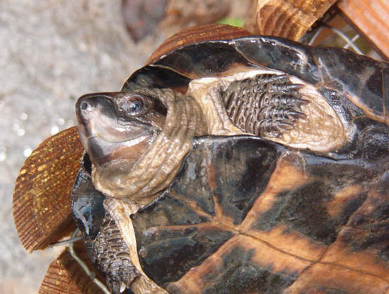

|
Siebenrockiella
crasicollis (Gray, 1831) La Tortuga malaya en cautividad
Jonathan González
Siebenrockiella crassicollis (Gray,
1831), es una tortuga acuática de mediano tamaño que se extiende por
el sudeste asiático. Antes de su protección por medio del convenio
CITES eran muchos los ejemplares que llegaban a Europa procedentes de
Java y Sumatra, en su mayoría mezclados con ejemplares de Malayemys
subtrijuga. Muchos de estos animales no han sobrevivido hasta
nuestros días, bien por el
lamentable estado de salud con el que llegaban a Europa, o por el
escaso conocimiento de los propietarios acerca de sus cuidados y
mantenimiento. Quien haya tenido la suerte de mantener a esta especie,
sabrá que se trata de animales muy tranquilos, e interesantes para
mantener en cautividad, debido al tamaño que alcanzan y a sus
requerimientos relativamente simples.
Características
El espaldar es de color negro intenso, y en los ejemplares jóvenes
presenta tres quillas longitudinales que con la edad van
desapareciendo hasta quedarse en una sola no muy marcada. El borde
posterior del caparazón es aserrado. El plastrón es de color blanco en
los animales jóvenes, y se va oscureciendo con la edad hasta quedarse
totalmente negro, excepto en las juntas de los escudos, las
cuales adoptan un color grisáceo o marrón.

Fig.1. Caparazón de S.crasicollis (Jonathan González)
Fig.2. Plastrón de macho adulto de S.crassicollis (Jonathan
González)
La cabeza es negra y alargada y presenta manchas de color
blanco o amarillento, que van menguando a medida que la tortuga crece.
La boca de esta tortuga es ancha, y el contorno muestra una especie de
sonrisa muy peculiar. Tanto la parte superior de la mandíbula como el
cuello son negros.
Fig.3. Detalle de la cabeza de ejemplar adulto de S. crasicollis
(Israel Crespo)
Las extremidades muestran membranas interdigitales de color negro, y
presentan unas uñas cortas, también negras, tanto en machos como en
hembras.

Fig.4. Detalle de las extremidades de
ejemplar adulto de S. crasicollis (Jonathan González)
Distribución
Siebenrockiella crassicollis (Gray, 1831) habita marismas,
charcas de zonas selváticas, ensenadas y pantanos de corriente lenta y
abundante vegetación. Se extiende por Tenasserim, Tailandia, sur de
Vietnam, Burma, Java, Sumatra y Borneo. Normalmente los ejemplares
importados a Europa son procedentes de las islas de Java y Sumatra.

Fig.5. Mapa de distribución
Hábitos
S. crasicollis tiene hábitos crepusculares, y
solamente está activa hacia el atardecer o a primera hora del día,
tiempo que pasa en busca de alimento. Es un animal muy sociable y rara
vez ataca a otras tortugas. Tiene un comportamiento
muy tranquilo y pasa mucho tiempo oculta entre la vegetación o cualquier
otro elemento en el que se sienta segura.
S. crasicollis, es fácil de mantener exceptuando los iniciales
"desajustes" de parásitos y las infecciones fúngicas, muy comunes en
esta especie. Debe mantenerse en un acuaterrario donde pueda nadar y
acceder a una zona seca, a pesar de no ser una tortuga que guste de
asolearse. Como iluminación, se ha de utilizar un fluorescente de
espectro solar, que se ha de situar a unos 30 cm. de la superficie del
agua. La temperatura del acuario, ha de oscilar entre los 28-30º C.
con un descenso nocturno de temperatura de unos 5º C, no siendo esto último un requerimiento fundamental. Al ser una tortuga procedente del sudeste asiático, la
posibilidad de hacerla hibernar debe descartarse por completo, ya que
sería letal para el animal.
Fig.6. Ejemplar adulto de S. crasicollis (Israel Crespo)
La tortuga malaya puede llegar a
realizar de 3 a 4 puestas de 1 a 2 huevos cada una (LIAT & DAS, 1999),
realizadas entre los meses de abril y julio.
S. crasicollis, es una tortuga carnívora que se alimenta de
pequeños moluscos, caracoles, pequeños trozos de carne, renacuajos,
babosas, lombrices, ranas y todo tipo de invertebrados que pueda
capturar. En cautividad, acepta distintas carnes como corazón e
hígado de ternera, pechuga de pavo, pequeños trozos de pescado,
camarones, etc. Esporádicamente gusta de mordisquear hoja de lechuga
(González, obs. pers), y como alimento secundario, pienso enlatado
para perros o gatos, o crías de ratón.
Conviene destacar la gran tendencia a la
necrosis de esta especie, tanto de la piel como del caparazón. Es raro
ver ejemplares recientemente importados que no manifiesten algún
síntoma de esta patología. Dicha tendencia se va reduciendo cuando los
animales se adaptan a la cautividad, pero serán las primeras que se
resientan si las condiciones de mantenimiento cambian, por ejemplo,
ante bajadas de temperatura. Los tratamientos de necrosis suelen
responder bien en casi todas las acuáticas, pero según la experiencia
de muchos aficionados, en esta
especie no son tan efectivos, al menos en ejemplares procedentes de
importación con las defensas bajo mínimos. Un ejemplo claro serían Emydura spp.
con problemas similares, pero por
el contrario, responden perfectamente al tratamiento, inclusive los
animales capturados.
Conservación
Recientemente S. crasicollis, ha sido incluida en el Apéndice
II del Convenio de Washington CITES, como muchas otras tortugas
procedentes del sudeste asiático, y no se realizan importaciones a día
de hoy.
Taxonomía
No hay subespecies ni variaciones geográficas descritas, a pesar de
que su amplia distribución hace pensar que esta especie puede tener
varios taxones a lo largo de su distribución.
Sinónimos
Bellia crasicollis (Gray, 1839)
Bibliografía
PETZOL, H.-G. 1959: Erster Nchkriesgsimport der Sunda-Riesenwasserschildrköte
(Orlitia borneensis (GRAY) im Tierpark Berlin und einige
Bemerkungen zu (Siebenrokkiella crassicollis) GRAY.- DATZ 12
(2): 54.
COX, VAN DIJK, NABHITABHATA & THIRAKHUPT. 1998. A Photographic
Guide to Snakes and Other Reptiles of Peninsular Malaysia,
Singapore and Thailand. Ralph Curtis Pub. Inc., Sanibel Island,
FL.
LIAL, L. B. & DAS, I. 1999. Turtles of Borneo and Peninsular
Malaysia. Natural History Publications (Borneo). Kota Kinabalu.
151 pp.
|